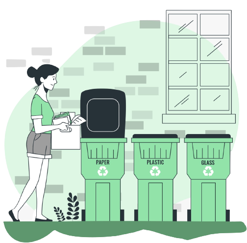

Isopor
Recycle
This project aims to unite two important factors in society today: recycling and the advancement of women in scientific areas. Thinking about promoting this kind of knowledge, we created "Girls in the Green"; here, you will find a brief history of women who revolutionized the sustainable world, what were their actions and how they did it. May our website provide you with a broad view on this points whose comments are somewhat scarce. Enjoy, explore and learn!
More info